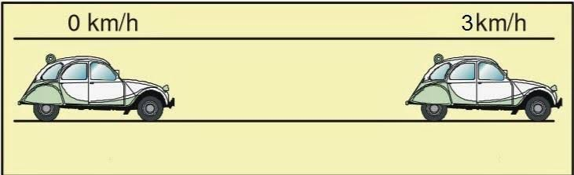
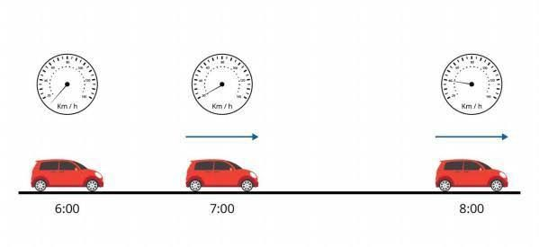

O objetivo deste projeto é compreender o movimento retilíneo uniforme variado (MRUV), investigando suas características e comportamento.
Qual é o comportamento de um objeto em movimento retilíneo uniforme variado em relação à sua velocidade e aceleração? Como essas grandezas estão relacionadas e como podemos medir e analisar esses parâmetros durante o movimento?
Montagem do experimento: será utilizado um carrinho de controle remoto e uma pista de corrida com uma linha reta. Aceleração: serão realizados experimentos variando a aceleração do carrinho através da manipulação do controle remoto. Medição dos tempos: serão registrados os tempos de percurso do carrinho em diferentes acelerações. Análise dos dados: serão aplicadas as equações da cinemática para determinar a velocidade e a posição do carrinho em diferentes momentos do percurso. Cálculo da aceleração média: a partir dos dados coletados, será calculada a aceleração média do carrinho em diferentes momentos do percurso.
Serão elaborados gráficos que representem a posição e a velocidade do carrinho em função do tempo.
Um objeto que possa ser lançado com velocidade inicial em uma superfície plana Cronômetro Régua Papel e caneta para registro de dados
Primeiramente, devemos definir o movimento retilíneo uniforme variado: é o movimento de um objeto que se move em linha reta com aceleração constante, ou seja, sua velocidade varia de forma constante ao longo do tempo. A equação que descreve esse movimento é: v = v0 + at, onde v é a velocidade final, v0 é a velocidade inicial, a é a aceleração e t é o tempo decorrido. Para começar o experimento, devemos lançar o objeto escolhido com uma velocidade inicial conhecida, medindo o tempo que leva para percorrer uma certa distância com o cronômetro. Anotamos os valores de tempo e distância. Repetimos o processo várias vezes, variando a velocidade inicial e/ou a distância percorrida. Com os dados coletados, podemos calcular a velocidade final do objeto utilizando a equação do MRUV. Podemos também calcular a aceleração, utilizando a equação a = (v - v0)/t. Com esses dados, podemos fazer gráficos de velocidade versus tempo e de aceleração versus tempo, analisando o comportamento das grandezas ao longo do movimento.
Com os dados coletados e os gráficos produzidos, podemos analisar o comportamento do movimento retilíneo uniforme variado. Algumas observações importantes incluem: A velocidade do objeto varia de forma linear ao longo do tempo, indicando que a aceleração é constante. A aceleração é positiva quando o objeto está acelerando e negativa quando está desacelerando. A inclinação do gráfico de velocidade versus tempo representa a aceleração do objeto. A área sob o gráfico de aceleração versus tempo representa a variação da velocidade do objeto ao longo do tempo. Com base nessas observações, podemos concluir que o movimento retilíneo uniforme variado é um movimento importante de ser compreendido em muitas áreas da física, incluindo a mecânica e a dinâmica. Ele nos ajuda a entender como as grandezas de velocidade e aceleração estão relacionadas e como podemos medir e analisar esses parâmetros durante o movimento.
Espera-se obter dados que permitam identificar as características do movimento retilíneo uniforme variado, como a aceleração constante em cada intervalo de tempo e a variação da velocidade em função do tempo. Além disso, espera-se observar a relação entre a aceleração e a variação da velocidade.
Com base nos resultados obtidos, será possível concluir que o movimento retilíneo uniforme variado é caracterizado por uma aceleração constante em cada intervalo de tempo e pela variação da velocidade em função do tempo. Além disso, será possível verificar a relação entre a aceleração e a variação da velocidade. Este experimento permitirá aos participantes compreender melhor os conceitos de movimento retilíneo uniforme variado e a aplicação das equações da cinemática para sua análise.
© Pedro Henrique e Sergio Luiz - 2023